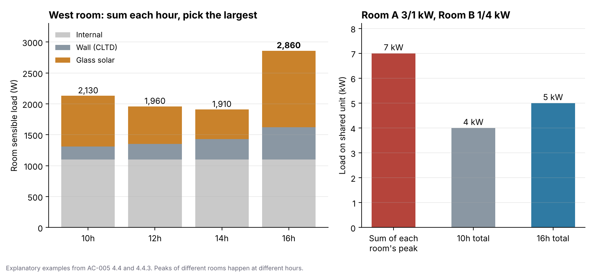

후배가 공조기 용량을 잡아 왔습니다. “동쪽 사무실 최대 3kW, 서쪽 사무실 최대 4kW라서 합쳐 7kW짜리로 골랐습니다.” 계산은 꼼꼼했습니다. 그런데 동쪽 방은 오전 10시에, 서쪽 방은 오후 4시에 가장 덥습니다. 두 방이 동시에 최대가 되는 순간은 없습니다. 오늘은 이렇게 입력값을 받아 최종 부하로 만드는 계산의 틀을 정리하겠습니다.
지난 글들에서 외기조건, 실내조건, 습도조건 같은 입력값을 정했습니다. 오늘 기준서는 그 입력값들을 어떤 항목으로 나누고, 어떤 식으로 계산하고, 어느 값을 최대부하로 고를지 정합니다. 여기가 바뀌면 계산서 숫자만이 아니라 AHU, PAC, EHP, 보일러 용량과 공사비까지 달라집니다.
먼저 결론부터 말씀드릴게요
| 항목 | 제가 쓰는 방법 |
|---|---|
| 계산 목적 | 장비 용량을 정하기 위한 최대 냉난방부하 (연간 에너지 예측이 아님) |
| 냉방 | 외벽·지붕은 CLTD, 유리는 일사취득, 나머지는 항목별로 계산 |
| 냉방 시각 | 10·12·14·16시를 각각 계산하고, 같은 시각끼리 더한 합계 중 가장 큰 값 |
| 난방 | 정상상태 열손실 + 방위계수 |
| 난방에서 일사·내부발열 | 빼지 않음 |
| 화장실·샤워실·탕비실 배기 보충외기 | 기본 미적용, 필요한 프로젝트만 따로 적용 |
| 안전율 | 기본부하를 다 계산한 뒤에 따로 적용 (AC-012) |
| 여러 실을 한 장비로 묶을 때 | 실별 최대값을 단순히 더하지 않음 (AC-013) |
부하는 kW, 에너지는 kWh
부하는 실내조건을 유지하려고 매 순간 빼거나 넣어야 하는 열의 크기입니다. 단위는 W나 kW입니다. kWh는 일정 시간 동안 쓴 에너지라서 장비 용량과 다릅니다. 오늘 기준서의 질문은 “1년에 얼마를 쓰는가”가 아니라 “가장 불리한 순간에 몇 kW짜리 장비가 필요한가”입니다.
용어 몇 개만 짚고 가겠습니다.
- 현열: 공기 온도를 바꾸는 열
- 잠열: 공기 속 수분을 빼거나 더하는 데 드는 열
- CLTD·ETD: 햇빛과 벽체의 열 저장 효과를 하나의 “등가 온도차”로 바꾼 값
- SHGC: 창으로 들어오는 태양열의 비율
냉방부하는 한 종류의 열이 아닙니다
| 구분 | 대표 항목 | 계산식 |
|---|---|---|
| 외피 현열 | 유리 일사 | SHGC × 일사량 × 면적 |
| 외벽·지붕 | U × A × (CLTD + 보정) | |
| 유리 전도 | U × A × ΔT | |
| 내벽 | U × A × ΔT/2 | |
| 공기 현열 | 외기·침기 | 0.336 × CMH × ΔT |
| 공기 잠열 | 외기·침기 | 0.833 × CMH × Δx[g/kgDA] |
| 내부 | 인체·조명·기기 | 인원·W/㎡로 계산 |
100㎡ 사무실(천장고 2.7m, 서울, 실내 26℃·50%, 재실 10명, 외기 250㎥/h, 침기 0.5회/h, 조명 6W/㎡, 기기 4W/㎡)로 일사와 CLTD를 빼고 단순 비교하면 이렇습니다.
| 항목 | 부하 | 비중 |
|---|---|---|
| 신선외기 (현열 437 + 잠열 1,624) | 2,061 W | 36.7% |
| 인체 (현열 630 + 잠열 690) | 1,320 W | 23.5% |
| 침기 (현열 236 + 잠열 877) | 1,113 W | 19.8% |
| 조명 | 600 W | 10.7% |
| 기기 | 400 W | 7.1% |
| 창·외벽 단순 전도 | 115 W | 2.1% |
| 합계 | 약 5,610 W |
공기(외기+침기)가 57%, 내부발열이 41%입니다. 외벽 U값만 정밀하게 따진다고 전체가 정확해지지 않는다는 뜻입니다. 다만 이 비교에는 유리 일사와 CLTD 외피부하가 빠져 있어서, 서향 대형창이 있는 방이라면 일사가 가장 큰 항목이 될 수 있습니다.
잠열식의 833과 0.833
잠열식에는 계수가 두 개 보입니다. 서로 다른 공식이 아니라 수분비 단위의 차이입니다.
- Δx를 g/kgDA로 쓰면
0.833 × CMH × Δx - Δx를 kg/kgDA로 쓰면
833 × CMH × Δx
외기 250㎥/h, 수분비 차이 7.8g/kgDA(서울 여름 18.27 − 실내 26℃·50% 10.49)라면 250 × 7.8 × 0.833 ≈ 1,624W입니다. 같은 값을 0.0078kg/kgDA로 바꿔 833을 곱해도 1,624W로 같습니다. 그런데 7.8에 833을 곱하면 1,000배 커집니다. 계산서를 검토할 때 제일 먼저 보는 곳입니다.
왜 10·12·14·16시를 다 계산할까요
외벽은 햇빛을 받는 순간 그만큼의 열이 바로 실내로 들어오지 않습니다. 겉면이 데워지고, 벽 안에 열이 저장되고, 몇 시간 뒤 실내 쪽으로 나옵니다. 그래서 같은 벽이라도 방위에 따라 가장 더운 시각이 다릅니다. 「건축기계설비 설계기준」(2010) 표 2.22의 ETD를 보면 동향 벽은 오전에, 서향 벽은 오후에 커집니다.
| 벽형 IV 방위 | 10시 | 12시 | 14시 | 16시 |
|---|---|---|---|---|
| 동(E) | 12.9 | 15.4 | 13.8 | 12.3 |
| 서(W) | 2.9 | 4.9 | 7.9 | 14.0 |
그래서 한 시각만 보지 않고 네 시각을 다 계산합니다. 중요한 건 같은 시각의 항목끼리 먼저 더하고, 그 합계 중 가장 큰 값을 고른다는 순서입니다. 유리 일사의 최대, 외벽의 최대를 따로 골라 더하지 않습니다.

처음 질문의 답이 여기 있습니다. 동쪽 방 3kW와 서쪽 방 4kW를 더한 7kW는 서로 다른 시각의 최대를 더한 값입니다. 공통 장비는 같은 시각의 합계와 동시부하(AC-013)를 보고 고릅니다.
솔직하게 한계도 적어둡니다. 네 시각 중 최대가 하루 전체의 최대를 보증하지는 않습니다. 실제 최대가 네 시각 사이에 있을 수 있습니다. 표 2.22가 24시간 값을 주니 24시간 계산으로 넓히는 건 기술적으로 가능하지만, 결과가 달라지는 변경이라 검증 없이 바꾸지 않고 검토 과제로 남겨두었습니다.
CLTD 실내온도 보정도 하나 있습니다. CLTD 표는 실내 26℃ 기준이라 보정 = 26 − 실내 냉방설계온도를 더합니다. 중앙제어실(24℃)은 +2℃가 되고, 전기실(30℃)은 −4℃가 됩니다. 보정 후 CLTD가 0보다 작아지면 0으로 둡니다.
난방에서는 사람과 조명의 열을 빼지 않습니다
냉방에서 사람·조명·기기의 열은 부하를 키우니 반드시 더합니다. 난방에서 이 열을 빼면 계산상 난방부하가 작아집니다. 얼마나 작아지는지 같은 사무실로 보겠습니다(서울 외기 −11.3℃, 실내 21℃, ΔT 32.3K).
| 항목 | 열손실 |
|---|---|
| 외벽 | 233 W |
| 창 | 485 W |
| 침기 (135㎥/h × 32.3 × 0.336) | 1,465 W |
| 신선외기 (250㎥/h × 32.3 × 0.336) | 2,713 W |
| 합계 | 약 4,896 W |
내부 현열(인체 630 + 조명 600 + 기기 400 = 1,630W)을 빼면 3,266W, 원래 열손실의 약 67%가 됩니다. 인체 잠열 690W는 난방 현열손실과 자리가 달라 넣지 않습니다.
그래도 저는 빼지 않습니다. 난방 설비는 야간, 주말, 건물 가동 전, 시운전 초기처럼 사람도 조명도 기기도 없는 시간에도 실내온도를 올릴 수 있어야 하기 때문입니다. 안전율을 한 번 더 얹는 게 아니라, 어떤 운전 조건을 설계할지 고른 것입니다. 위 67%는 “빼면 이렇게 된다”는 설명용이지 채택값이 아닙니다.
화장실 배기의 보충외기는 왜 기본에서 뺄까요
화장실, 샤워실, 탕비실에서 배기하면 같은 양의 차가운 외기가 들어오니 난방부하는 실제로 생깁니다. 다만 외기창이 있고, 머무는 시간이 짧고, 배기팬이 상시 운전이 아니라면, 그 부하 전체를 그 실의 라디에이터가 감당하게 만들면 지나치게 큰 난방기가 필요합니다.
그래서 기본은 잠깐의 실온 저하를 받아들이는 설계로 두고, 내부 화장실이나 상시 대배기처럼 조건이 다르면 따로 넣습니다. 부하가 없어서 빼는 게 아니라, 그 부하를 그 실의 난방기가 전부 맡지 않는다는 판단입니다.
안전율은 마지막에 한 번만
외기조건을 조금 더 덥게 잡고, 환기량도 늘리고, 내부발열도 올리고, 마지막에 안전율을 또 곱하면 여유가 여러 번 겹칩니다. 그러면 나중에 무엇이 얼마나 커졌는지 아무도 설명할 수 없습니다. 그래서 기본부하(AC-005) → 동시부하(AC-013) → 안전율(AC-012)을 서로 섞지 않습니다.
출처를 확인한 것과 못 한 것
이 기준서는 근거를 두 칸으로 나눠 관리합니다.
- 확인함: 국토해양부·사단법인 대한설비공학회, 「건축기계설비 설계기준」(2010년 12월) 제2장의 표 2.22 ETD, 표 2.36 방위계수
- 아직 확인 못 함: 방위·시각별 일사량표(서울 약 37°N)의 정확한 원 문헌과 표 번호, 사내 CLTD 표의 직접 출처
참고로 이 설계기준을 “AIK(대한건축학회)”로 적는 자료가 있는데, 발행처는 대한설비공학회(SAREK)입니다. 부산·목포·제주 같은 남부 지역이나 해외에서는 서울 일사량표를 그대로 쓰지 않고 따로 검토합니다.
제가 부하계산서를 검토하는 순서
- 외기·실내·U값·재실·조명·기기·침기·외기량이 각 기준서(AC-001~017)와 같은가?
- CLTD 실내온도 보정을 넣었는가?
- 잠열식의 단위와 계수(0.833 / 833)를 혼동하지 않았는가?
- 네 시각 각각의 합계에서 최대를 골랐는가?
- 난방에 일사·내부발열을 상쇄항으로 넣지 않았는가?
- 배기 보충외기 기본 미적용 대상과 예외 조건을 확인했는가?
- 실별 최대를 단순히 더해 장비를 고르지 않았는가?
- 안전율이 기본부하 안에 이미 섞여 있지 않은가?
- 남부·해외 프로젝트에서 서울 일사량표를 그대로 쓰지 않았는가?
발주처가 “이 장비는 왜 이 용량이냐”고 물으면 이렇게 설명합니다.
“외피, 일사, 외기, 침기, 인체, 조명, 기기 발열을 항목별로 계산했습니다. 냉방은 방위와 시간에 따라 부하가 달라져 10·12·14·16시를 각각 계산하고 가장 큰 값을 실 냉방부하로 썼습니다. 난방은 사람과 조명, 기기가 없는 야간·주말에도 설계온도를 확보할 수 있도록 일사와 내부발열을 빼지 않았습니다. 안전율과 동시부하율은 별도 기준으로 적용해 여유가 겹치지 않게 했습니다.”
앱에서 확인해보세요
HVAC 부하·용량 계산서 앱은 오늘 글의 계산 순서 그대로 동작합니다. 실마다 10·12·14·16시 부하를 각각 계산해 최대 시각을 표시하고, 계산서에는 항목별 식과 중간값이 줄마다 찍힙니다. 난방은 일사·내부발열 없이 계산하고, 배기 보충외기는 체크박스로 켜고 끌 수 있습니다.
서향 창이 큰 실을 하나 만들어, 최대 시각이 16시로 잡히는지 직접 확인해보세요. 이번 주에는 앱에 남아 있던 출처 표기와, 아직 결정하지 않은 방위계수 차이를 개발 기록에 정리했습니다.
👉 HVAC 부하·용량 계산서 써보기 · 앱 소개 보기
관련 기준: 외기조건 AC-001·002, 실내조건 AC-003, 가습 AC-004, 외피 U값 AC-006, 인체 AC-007, 조명 AC-008, 기기 AC-009, 침기 AC-010, 방위계수 AC-011, 안전율 AC-012, 동시부하 AC-013, 환기량 AC-017. 외부 기준: 국토해양부·대한설비공학회 「건축기계설비 설계기준」(2010) 제2장 표 2.22·표 2.36.